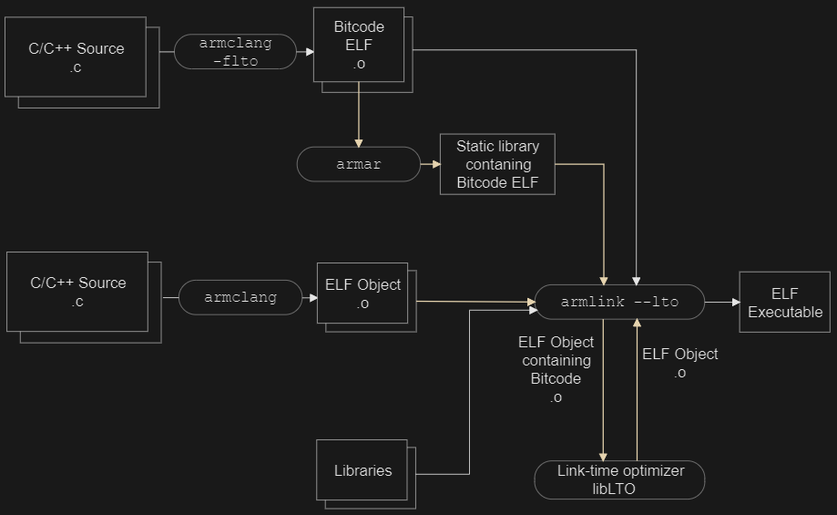

三、RA8D1 CoreMark测试GCC vs AC6和分散加载浅析
一、概述
- RA8D1 搭载 Cortex-M85 内核，主频 480MHz
- 使用 GCC(13.3.1) 和 AC6(Clang 20.0.0git) 两种工具链编译 CoreMark
- 测试不同优化等级、内存布局（Cache+SRAM、TCM）对跑分的影响
二、测试环境
| 项目 |
参数 |
| 芯片 |
RA8D1 |
| 内核 |
Cortex-M85 |
| 主频 |
480MHz |
| GCC 版本 |
13.3.1 20240614 |
| AC6 版本 |
Clang 20.0.0git |
| CoreMark Size |
666 (2K) |
| Iterations |
80000 |
三、GCC 跑分结果
3.1 测试配置与结果
| 编号 |
配置 |
Iterations/Sec |
CoreMark/MHz |
| 1 |
-Ofast + fsp.ld（默认链接） |
2286.37 |
4.76 |
| 2 |
-Ofast + fsp.ld + stack 放 DTCM |
2343.57 |
4.88 |
| 3 |
-Ofast + fsp_tcm.ld（TCM链接） |
2341.30 |
4.88 |
| 4 |
-Ofast + fsp_tcm.ld + stack 放 DTCM |
2341.37 |
4.88 |
3.2 GCC 结果分析
- 默认链接脚本：4.76 CoreMark/MHz，基线成绩
- Stack 放入 DTCM：提升到 4.88 CoreMark/MHz，提升约 2.5%
- TCM 链接脚本：与 stack 放 DTCM 效果接近，约 4.88 CoreMark/MHz
- GCC 下 TCM 带来的收益有限，说明代码主要已在 Cache 中命中
四、AC6 跑分结果
4.1 测试配置与结果
| 编号 |
配置 |
Iterations/Sec |
CoreMark/MHz |
| 1 |
-Ofast + stack 放 DTCM |
2688.35 |
5.60 |
| 2 |
-Ofast + stack 放 DTCM + fsp_tcm.scat |
2683.30 |
5.59 |
| 3 |
-Omax + fsp_tcm.scat |
2780.77 |
5.79 |
| 4 |
-Omax + fsp.scat（默认链接） |
2780.77 |
5.79 |
| 5 |
-Omax + stack 放 DTCM |
2974.97 |
6.20 |
4.2 AC6 结果分析
- -Ofast 基线：5.60 CoreMark/MHz，已明显高于 GCC 的 4.88
- -Omax（开启 LTO）：5.79 CoreMark/MHz，比 -Ofast 提升约 3.4%
- -Omax + stack 放 DTCM：6.20 CoreMark/MHz，最高成绩
- AC6 整体比 GCC 高约 27%（5.60 vs 4.76 基线对比）
五、GCC vs AC6 对比汇总
| 对比维度 |
GCC (-Ofast) |
AC6 (-Ofast) |
AC6 (-Omax) |
| 基线（默认链接） |
4.76 |
5.60 |
5.79 |
| Stack 放 DTCM |
4.88 |
5.60 |
6.20 |
| TCM 链接脚本 |
4.88 |
5.59 |
5.79 |
| 最高成绩 |
4.88 |
5.60 |
6.20 |

六、AC6 优化等级与 LTO 详解
6.1 -Ofast vs -Omax
| 优化等级 |
LTO |
说明 |
| -Ofast |
不启用 |
激进优化，但不做跨模块链接时优化。允许浮点重结合等可能违反标准合规的变换 |
| -Omax |
默认启用 |
最大优化，等价于 -O3 -flto。启用所有优化包括跨模块内联、死代码消除和链接时优化 |
6.2 什么是 LTO（Link Time Optimization）
LTO 是一种跨模块的过程间优化，在链接阶段而非编译阶段执行：
- 编译阶段：armclang 使用
-flto 时生成 bitcode（字节码）文件，而非标准 ELF 对象文件。Bitcode 包含源代码的中间表示（IR）和模块依赖信息
- 链接阶段：armlink 处理 bitcode 文件，提取模块依赖信息，传递给 llvm-lto 工具
- 优化阶段：链接时优化器分析所有模块，移除未使用函数/数据，执行跨模块内联，生成优化后的 ELF 对象
- 最终链接：优化后的对象与其他 ELF 对象和预编译库链接，生成最终可执行文件
6.3 LTO 对 Scatter File（TCM 放置）的限制
LTO 的核心问题是原始对象文件边界被打破：
- 对象合并：LTO 将所有 bitcode 合并为
lto-llvm-xxxxx.o 这样的单一对象，原始 .o 文件不再独立存在
- Section 属性丢失：
__attribute__((section(".dtcm"))) 指定的段属性在 bitcode 合并过程中可能被合并或重命名
- Scatter 文件匹配失败：scatter 文件中基于对象名的模式（如
version.o (+RO)）将无法匹配，产生 L6314W 警告
具体表现
| 问题 |
说明 |
| 对象名引用失效 |
scatter 文件中无法使用 xxx.o 显式引用对象，因为代码已被合并到 lto-llvm-xxxxx.o |
| Section 属性可能被合并 |
命名段可能无法在 bitcode 合并过程中保留 |
| RAM 函数放置异常 |
通过 scatter 文件放入 RAM 的函数可能被内联到 Flash 函数中，破坏原有放置 |
Arm 官方建议
"Scatter-loading of LTO objects is supported but it's recommended for code and data that doesn't have a strict placement requirement."
— Arm Employee, Arm Community
6.4 如何规避 LTO 限制
| 方法 |
操作 |
| 换用 -Ofast |
不使用 -Omax，避免 LTO，scatter 文件正常工作 |
| 部分文件禁用 LTO |
对需要严格放置的文件编译时加 -fno-lto，其余文件保持 -flto |
| 链接器禁用 LTO |
使用 --no_lto 参数 |
| 使用段名而非对象名 |
scatter 文件中使用 *(.dtcm) 而非 xxx.o (.dtcm)（不保证可靠） |
6.5 本次测试中的体现
- 配置 3（-Omax + fsp_tcm.scat）与配置 4（-Omax + fsp.scat）成绩相同（2780.77），说明 LTO 开启后 scatter 文件的 TCM 放置可能未生效
- 配置 5（-Omax + stack 放 DTCM）达到最高 2974.97，说明通过
__attribute__((section())) 直接指定 stack 位置的方式在 LTO 下仍然有效
- 若需要 scatter 文件精确控制 TCM 放置，建议使用
-Ofast 而非 -Omax
七、总结
- AC6 优于 GCC：AC6 基线成绩比 GCC 高约 27%，编译器优化能力更强
- -Omax 最快但有代价：LTO 带来额外 3-6% 性能提升，但限制了 scatter 文件的 TCM 精确放置
- TCM 收益：Stack 放入 DTCM 在两种工具链下都有正向收益，AC6 下提升更明显
- 最佳实践：追求极致性能用 AC6 -Omax + stack 放 DTCM（6.20 CoreMark/MHz）；需要精确内存布局用 AC6 -Ofast